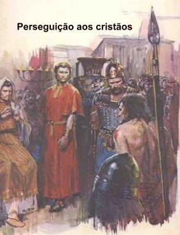
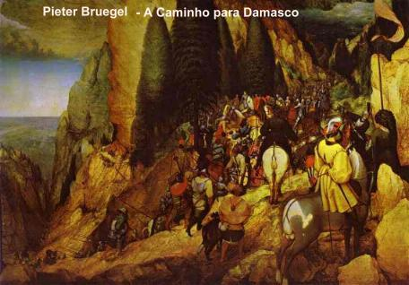
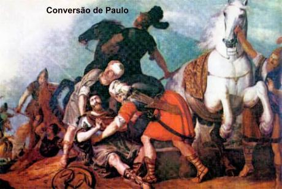
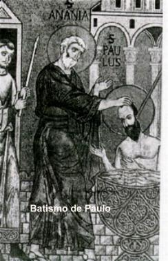
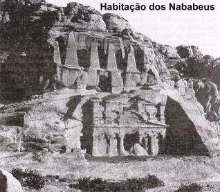
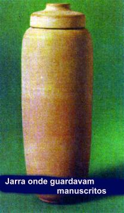
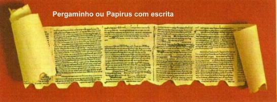
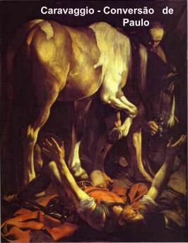
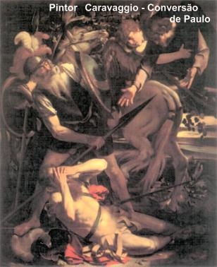

PERSEGUIÇÃO AOS CRISTÃOS
O
acontecimento da morte do Diácono Estevão, desencadeou uma 
Por outro lado, como consequência do abominável episódio da morte de Estevão, que foi lapidado pelos próprios colegas de aula, as autoridades judaicas e romanas reagiram contra aquele procedimento cruel e fecharam a Escola de Gamaliel, considerando-a excessivamente tolerante.
Saulo contudo, não esmorecia em seu ímpeto, devastava a Igreja penetrando nas casas dos cristãos e arrancando os moradores à força, metia todos eles na prisão. Aquelas casas que não atendessem ao chamado e não abrissem a porta de entrada, ele mandava arrebentá-la a machado. E no seu zelo farisaico de exterminar os fieis de CRISTO onde os encontrasse, cheio de ira, respirando ameaças e morticínios contra os discípulos do SENHOR, foi procurar o Sumo Sacerdote e lhe pediu cartas de apresentação para as sinagogas de Damasco. Não satisfeito com sua atuação em Jerusalém, quis ampliá-la, a fim de trazer agrilhoados para a Judéia os cristãos que estivessem na Síria, homens e mulheres. Saulo contava com a conivência dos Sacerdotes Sírios, a fim de que eles lhe indicasse os nomes das famílias dos cristãos de Damasco, para que os seus soldados pudessem prender todos eles e “limpar a cidadeâ€.
Assim, repleto de propósitos funestos, iniciou a viagem com uma escolta de quatro cavaleiros.
A CAMINHO DE DAMASCO

- “Saulo, Saulo, porque me persegues?†(At 9,4)
- “Quem es tu SENHOR?†(respondeu Saulo, atônito e sem ação)
- “EU Sou JESUS, a quem persegues. Levanta-te, entra na cidade, e ser-te-á dito o que deves fazer.†(At 9,5-6)
Com estas palavras,
desapareceu a luz brilhante que incidia sobre Saulo. Os soldados, 
CONVERSÃO DE SAULO
Vivia em Damasco um discípulo de JESUS chamado Ananias. O SENHOR apareceu-lhe em visão e disse:
- “Ananias, vai à rua Direita e procura, na casa de Judas, um homem chamado Saulo, de Tarso. Veja ele está orandoâ€. (Ananias teve uma visão). (At 9,11)
E também, naquele mesmo momento, o SENHOR proporcionou a Saulo uma visão: ele viu um homem chamado Ananias que entrava onde estava e lhe impunha as mãos, para que ele recuperasse a vista.
Ananias respondeu a JESUS:
- “SENHOR, ouvi de muitos, a respeito deste homem, quanto mal ele fez a teus santos em Jerusalém. E está aqui com plena autoridade dos sumos-sacerdotes para aprisionar os que invocam o teu nome.†(At 9,13-14)
Mas o SENHOR ordenou:
- “Vai, porque este homem é para mim um vaso escolhido para levar o meu Nome diante dos gentios, dos reis, e dos filhos de Israel. EU Mesmo lhe mostrarei o quanto lhe será preciso sofrer por causa do Meu Nome.†(At 9,15-16)
Ananias partiu obedientemente para cumprir a ordem do SENHOR. Entrando na casa, imediatamente foi ao encontro de Saulo. Aproximou-se e lhe impôs as mãos, dizendo:
- “Saulo, meu irmão, quem me envia é o SENHOR, esse JESUS que te apareceu no caminho por onde vinha, a fim de recuperar a vista e ficar repleto do ESPÍRITO SANTO.â€(At 9,17)

Sozinho com seus pensamentos, Saulo que era de muitos estudos, compreendeu o chamado Divino e segundo a Vontade do SENHOR, teria uma missão especial de evangelizar os pagãos e convertê-los ao cristianismo, seria de fato o Apóstolo dos gentios. A partir desta época, no ano 36 de nossa era, com 26 anos de idade, consagrou definitivamente a sua vida com todas as suas forças, ao serviço e ao amor de CRISTO.
Mas naquele momento precisava organizar a sua mente, arrumar o seu raciocínio e também se ocultar em algum lugar seguro, onde não fosse encontrado, porque os judeus queriam matá-lo. Em Damasco, o etnarca do rei Aretas, havia colocado vigias pela cidade para descobrir o seu paradeiro. Os cristãos observando a transformação ocorrida em Saulo e lembrando os depoimentos de Ananias, que tinha recebido do SENHOR a ordem de restituir-lhe à visão, decidiram acolher a conversão do "antigo perseguidor" e se uniram para ajudá-lo a fugir dos judeus. No entardecer daquele dia, acompanhado de alguns cristãos e vestindo um manto comprido como disfarce, levando um amarrado de mercadorias em sua cabeça, ao modo dos negociantes, saíram pelo portão principal da cidade sem serem observados e se dispersaram. Os outros voltaram para Damasco enquanto ele seguiu em direção ao sul, ao reino dos nababeus, na Arábia, onde permaneceu aproximadamente dois anos e alguns meses no deserto. (Gal 1,17)
Inspirado pelo ESPÍRITO SANTO, no momento oportuno voltou a Damasco para pregar o Evangelho de JESUS.(At 9,20)
 

 